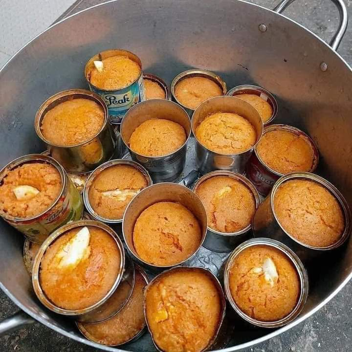

Home
Moi-moi, also known as moin-moin or
olele, is a popular and nutritious steamed bean pudding
from Nigeria, with roots in the Yoruba culture. It is a savory dish made from
a paste of peeled beans, which is then blended with a vibrant mix of peppers,
onions, and various spices before being steamed to a delicate, cake-like
consistency.
Key Characteristics:
- Ingredients: The primary ingredient is black-eyed peas or
brown beans, which are soaked and peeled to create a smooth, creamy paste.
The paste is then blended with fresh red bell peppers (tatashe), Scotch
bonnet peppers (ata rodo), onions, and often ground crayfish for a
distinct flavor.
- Protain-rich: Moi-moi is highly regarded for its high
protein content, making it a very filling and healthy meal.
- Fillings: A wide variety of ingredients can be added to
the bean paste to enhance its flavor and texture. Common additions include
hard-boiled eggs, shredded fish (like mackerel), corned beef, or cooked
prawns. This versatility allows for many different versions of the dish.
- Cooking Method: The unique texture of moi-moi comes from
the steaming process. The bean paste is poured into containers and then
steamed in a pot of boiling water.
- Traditional Method: Traditionally, moi-moi is wrapped in
large, broad leaves known as ewe eran or banana leaves. Cooking it this
way is believed to give it a special, earthy aroma and flavor that is
highly prized.
- Modern Method: Today, it is also commonly cooked in small
aluminum foil bags, heat-resistant plastic containers, ramekins, or even
muffin tins, which makes the process more convenient.
- Cultural Significance: Moi-moi is a staple in Nigerian
cuisine and is often served at social gatherings, parties, weddings, and
holidays. It is considered a comfort food and is a symbol of hospitality.
How it's Served:
Moi-moi can be a meal on its own, but it is also a fantastic accompaniment
to many other Nigerian dishes. It pairs wonderfully with:
Jollof Rice
Fried Rice
Pap (Ogi or Akamu) or custard
Garri (cassava flakes)
Bread
In essence, moi-moi is a delicious, versatile, and culturally significant
dish that showcases the ingenuity and rich flavors of Nigerian cooking.